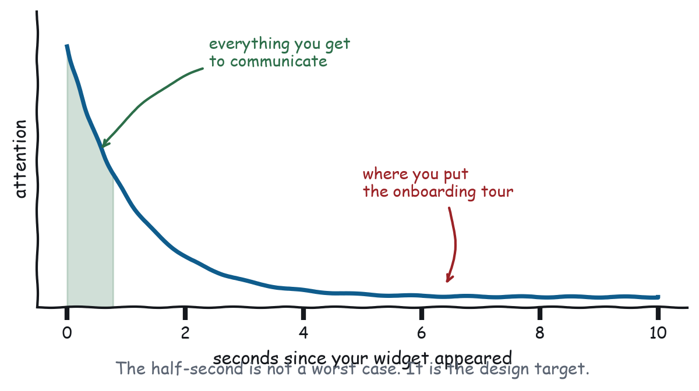
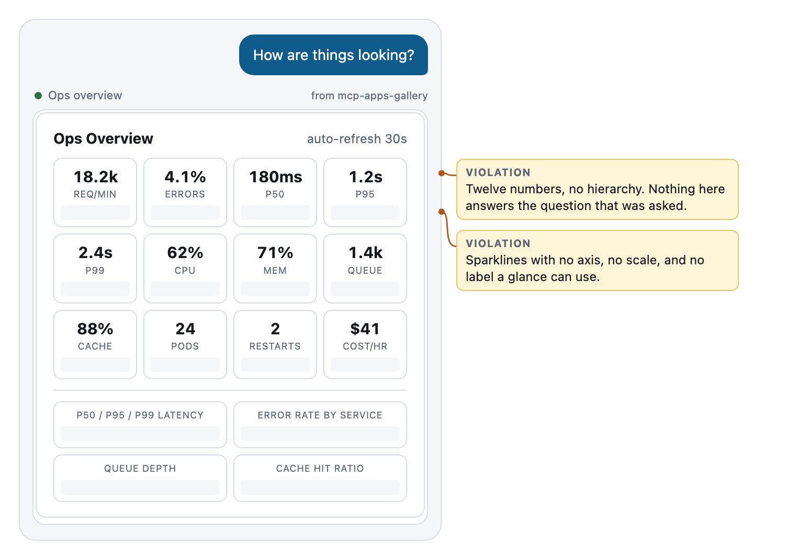
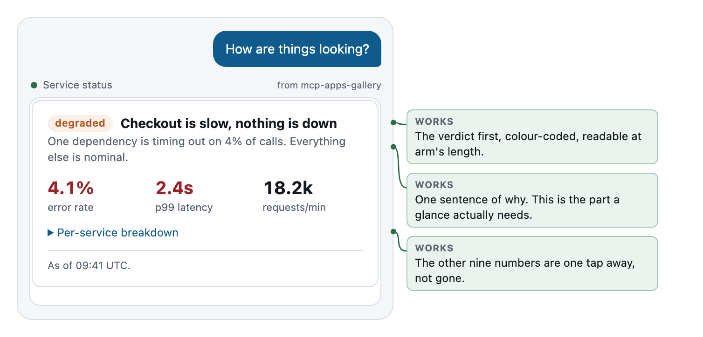

Chapter 3
How People Actually Use Apps in Chat
Glancing, satisficing, partial attention, streaming data, and a viewport you do not control.
Krug’s second chapter is the one that reframes everything, because it replaces the user you imagine with the user you have. His finding, from watching people instead of asking them: nobody reads, everybody scans, and they do not choose the best option, they choose the first one that plausibly works.
All of that transfers. Then chat adds three complications of its own.
Nobody reads your dashboard
Here is what actually happens when your widget renders.
The user is mid-conversation. They typed something, they are waiting, and they are also looking at Slack. Your widget appears. They look at it for somewhere between a third of a second and two seconds. In that window they decide one of three things: this answers my question, this is not for me, or there is something here I need to touch.
Then they either act or they type the next message.

That is the design target. Not a worst case, not an unengaged user, not somebody being rude to your work. That is the median interaction, and it is the median because the user is not in your app. They are in a conversation, and your app is one paragraph of it.
Two consequences follow immediately.
The first thing readable must be the answer. Not the title. Not the brand. Not the loading state, if you can avoid one. If your widget takes a beat to resolve, the beat should resolve into the verdict, and the supporting detail should arrive after.
Everything else is optional. Not unimportant. Optional. It has to be available to the person who wants it, and invisible to the person who does not, and those are the same person half a second apart.
Satisficing, and why your careful hierarchy loses
Krug’s other finding is that people do not evaluate options. They take the first one that looks like it will work, and they are right often enough that the habit survives.
In a chat surface this gets stronger, because the cost of being wrong dropped. If the user clicks the wrong thing they can just say so. “No, the other one.” The model fixes it. Compare that to a web form that lost your input on submit, which is the experience that taught a generation to read carefully.
So users click fast and correct verbally. Design for it:
- Make the first plausible option the correct one, when you can.
- Make wrong choices cheap to reverse, and say so where they can see it.
- Do not build interfaces that punish speed. Multi-step wizards with validation at the end punish speed. A confirmation that summarises what is about to happen does not.
Data arrives in pieces
Here is the first complication that is genuinely new.
On the web, your page loads and then it renders. In this medium the render happens first. The host has prefetched your template and put it on screen while the tool call is still in flight. Then the arguments arrive. Then, some time later, the result arrives.
That is not an edge case. That is the normal sequence, described in Chapter 6 and drawn in Figure 6-1. Your app’s first state is no data, and its second state is some data, and both of those are states a user will see.
Which means the skeleton is not a nicety. It is a screen your users will look at, and it should be designed rather than defaulted.
A good skeleton in this medium does one thing a web skeleton does not: it uses the arguments. By the time you are drawing the skeleton you already know the tool was called with origin: "SFO", destination: "JFK", date: "2026-08-20". Draw the title. Draw the route. Draw the three grey rows where the flights will go. The user reads the header while the data lands and the perceived wait is zero, because they were busy.
The version that shows a spinner over an empty box has thrown away information it already had.
The guest viewport
Your app renders in a column. In Claude on a phone that column is roughly 380 CSS pixels wide. On a laptop it is wider, but not much, because the transcript is centred and the surrounding chrome is not yours to remove.
You do not get to choose this. You do not get to break out of it. A widget that needs 900 pixels does not become a widget that gets 900 pixels; it becomes a widget with a horizontal scrollbar, which is a widget nobody uses.
Design at 380 and let it grow. Not the other way around. The direction matters because designing wide and shrinking produces a layout with a wide-screen soul, where the mobile version is the compromise. Designing narrow and expanding produces a layout that is correct everywhere and comfortable in one place.
Practical consequences, all learned the hard way:
- Two columns of numbers, maximum. Three if one of them is an icon.
- Tables above about four columns need a different shape. Usually a list of cards, each card being one row turned sideways.
- Long labels wrap. Test with the longest label in your data, not the shortest.
- Never fix a height. Report your height with
ui/size-changedand let the host give you what it can. The gallery’s bridge does this in one line and calls it again whenever the content changes.
And the one that catches everybody: the theme is not yours. The host supplies it, the user may be in dark mode, and they may switch while your app is on screen. Paint with the host’s variables. If you hard-code background: white you have built a bright rectangle that shouts in a dark transcript, and users notice that faster than they notice anything else you did.
Billboard design, one glance at a time
Krug’s chapter on billboards is about hierarchy: make the important thing look important, and make the relationship between things visible without reading them.
The chat version is stricter, because you have less room and less time. It comes down to three levels, and a widget that has more than three is asking for a reading rather than a glance.
Level one: the verdict. One line. The largest thing on screen. The answer to the question that caused the render. degraded: checkout is slow, nothing is down. Cedar Credit Union, $34,835. If the user reads only this, they should be able to act.
Level two: the why. One sentence, or two or three numbers. Enough to trust level one, or to notice that level one is wrong. One dependency is timing out on 4% of calls. Everything else is nominal.
Level three: everything else. Behind a disclosure, and genuinely available. Per-service tables, historical detail, the fields the compliance team asked for.
Teardown: two ops dashboards
The task: “how are things looking?”

Twelve tiles. Every one of them is a real metric that somebody genuinely needs some Tuesday. There is no level one. There is no level two. There are twelve level threes and a set of sparklines with no axis, no scale, and no label a glance can use.
The user asked how things are looking. This widget replies with the contents of a filing cabinet and lets them do the synthesis, which is precisely the work they hoped to delegate.
Watch what it does at 380 pixels: four tiles per row becomes four tiles jammed per row, each about 80 pixels wide, containing a number and a label in nine point type. It is technically responsive and practically illegible.

Same data. degraded, colour-coded, first. Then the sentence that explains it. Then three numbers, of which two are marked as the alarming ones. Then a disclosure holding the per-service table, which is where the other nine metrics went. Nothing was deleted. The hierarchy was applied.
And notice the last line: As of 09:41 UTC. A status widget without a timestamp is asserting the present tense on the strength of a fetch it made at an unknown moment. Chapter 7 is about what that costs.
The first render is the homepage
Krug spends a chapter on the homepage, because it is the page that has to answer four questions at once: what is this, what do you have, what can I do here, and why should I be here rather than somewhere else.
Your first render is that page, and it has less room and less time. It has to answer three:
- What am I looking at? One line, and the line is not your product name.
- What does it say? The verdict, at level one.
- What can I do about it? Zero controls is a fine answer. One is usually the right one.
If the render answers those three in the first half second, the rest of the design is decoration you may or may not need. If it does not, no amount of decoration will save it.
What to remember
People glance, satisfice, and correct verbally. Data lands in pieces, so the skeleton is a screen you designed. The viewport is narrow, the theme is not yours, and the height is a request rather than a decision. Hierarchy is three levels: verdict, reason, everything else.
Next chapter: the single rudest thing a widget can do, which is ask a question whose answer is already in the transcript.